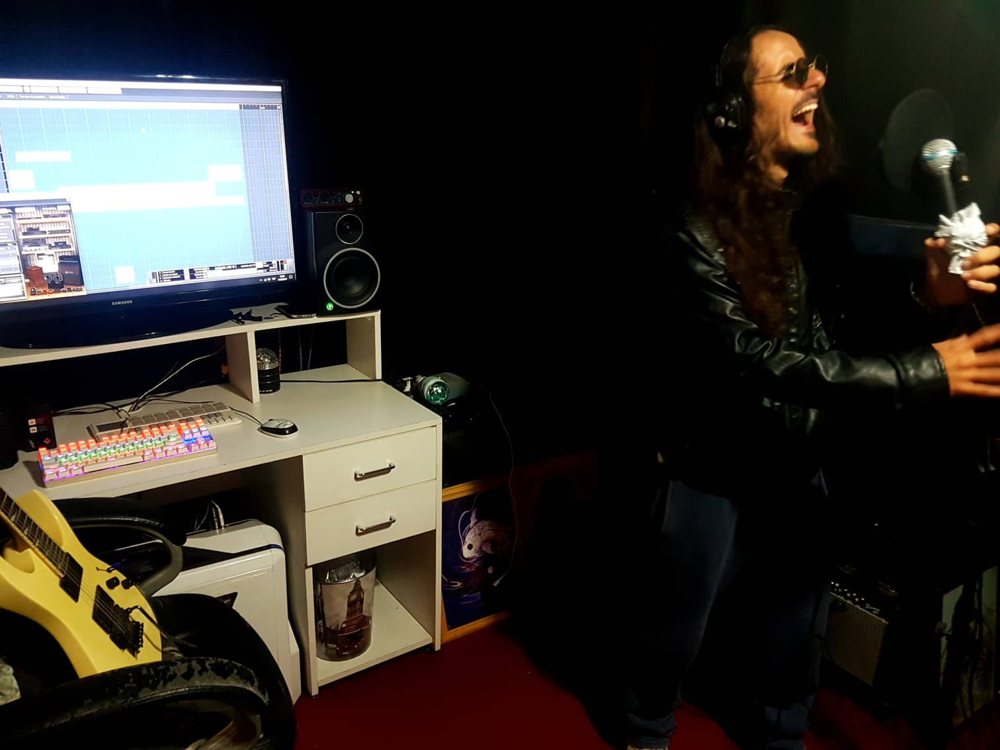
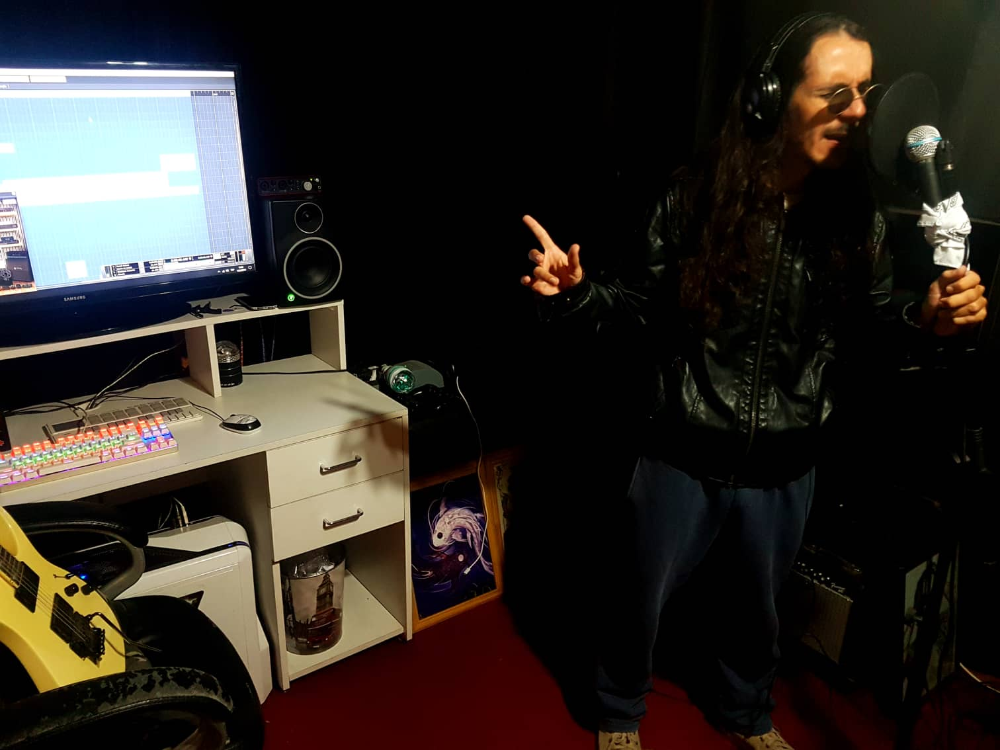
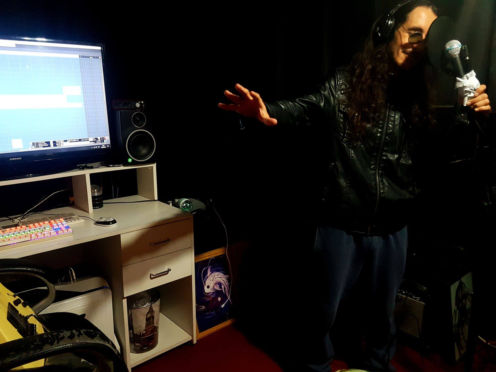

For Not Being Able to Save You

What happens when a victim chooses to remain as they are, despite having the option to stop being one? Do they not, at that point, become an accomplice?
Inspired by a controversial situation, a concept began to take shape in my mind. It eventually transformed into the final track of our band Ssendas' album, En Ningún Lugar (Nowhere). A woman as the victim of violence, a hero as the savior, and an alcoholic villain—these elements intertwined to breathe life into this story.
Around September 2018, in Buenos Aires, Argentina. Spring had arrived, and the leafy town where I live was beginning to bloom once again.
The city was full of life, but naturally, it was also the season for allergies—the usual pollen and dust mites. Still, the colors of spring make it worth it. It’s a season where chilly days remain, yet occasionally, an exceptionally clear sky arrives as a harbinger of the approaching heat.
I was heading to the guitarist's house with the band manager. At the entrance, his dog Ozzy was jumping around happily, as usual, upon seeing me. Once inside, I went to the room prepared for recording, sat down, and lost myself in thought. The album needed one final song.
As I did in every session, I pulled out a notebook. It was filled with my notes, reflections, and ideas. I had been using it for three or four years; it wasn't my only one, but it was the most recent at the time. I selected a set of lyrics from it and made a proposal. No one doubted me for a single moment. The team trusted my vision. However, that song was a challenge—it was different from anything we had done before. And I, too, was searching for something distinct from our previous work.

The background of these lyrics lies in a story I experienced several years ago. A close colleague at work approached me one day, tearfully revealing that she was being subjected to violence by her partner. She had been suffering for years; she was devastated by her situation, and her heart was in tatters.
I comforted her, and every time she came into work, we would talk about it. There were days when she spoke honestly about her feelings, and other days when she tried to forget even the necessity of escaping. I stayed by her side and listened. What was happening to her was painful, so I reached out. I told her we would solve it together and that I would help her get out of there.
And so, we began to make a plan. A plan that wouldn't corner her, but would allow her to take the necessary steps, one by one, to return to happiness once again. In the process, there were times when she would stall for days, and progress was slow. I was overcome with frustration. I remember one time when a message arrived from her. She was waiting for her lover. Huddled in a corner of the room, clutching her dog and crying, she was waiting for the door to open and for her alcoholic lover to walk in and beat her, just like always.
I wanted to mediate, to intervene, but she wouldn't allow it. I had to remain calm. Otherwise, all the progress we had made up to that point would have been ruined.
Eventually, we reached a critical turning point. We agreed that the only way to escape definitively was to tell her mother, whom she loved and respected more than anyone else. Her mother was her anchor, the strength she needed to break free. We set a date, and I told her I would go with her if necessary.
At first, everything seemed full of hope. But two or three days before the set date, she vanished completely. By then, she no longer worked with me, but she blocked me on social media and every other means of communication. I was stunned; I couldn't understand why.
I thought she would eventually reach out again as the days passed, but the block was never lifted. That’s when I understood: she had lost her nerve again. She chose the comfort of suffering over the risky "leap of faith" toward peace. I waited for several months out of respect, but my mind remained tormented. Finally, I decided to play my card. I took an action that was extremely dangerous and would likely push her even further away: I did thorough research until I tracked down her mother’s contact information. I called her and told her everything.
The mother seemed unable to believe it, yet at the same time, she needed to hear that truth about her daughter. At the very least, I had fulfilled my role. From that point on, it was up to them to speak the truth when they faced each other. But this isn't Peter Pan or a fairy tale; that moment never happened.
Sometimes, whenever I turned on the news, I would imagine seeing her face among the headlines of women murdered by their husbands. Years have passed, and while occasionally reflecting on this matter, I wrote down several notes about it. One of those notes was what sat before my bandmates back then. The lyrics needed a great deal of polishing. The manager said he wanted to add his own perspective, so I allowed him to include a few short phrases from a long document he had written. His text was about four pages long, but it seemed completely inappropriate to me—it was meaningless and pointlessly grotesque. So, I selected only four sentences from his entire text and, infusing them with genuine sensibility, I wove them into my own lyrics.
Analyzing the lyrics:
In the corner of the room, clinging to the dog, wiping tears with trembling hands.
This part narrates an actual scene. It’s the moment she was clutching her dog, crying, and writing messages to me while shaking with fear—waiting for her partner to show up and beat her.
Black bruises remain on the body, the hour of lament begins.
"Black bruises" refers to the marks of the blows (bruises). I saw them the next day; sometimes she would show them to me herself. The "hour of lament" is because the regret of having stayed rushes in alongside the pain, even if that regret is destined to be short-lived.
Stumbling footsteps outside, the loathsome beast arrives. Reeking of alcohol, misery is served right there.
Here, I am essentially depicting the figure of the man returning home drunk. A man ready to strike his wife the moment he sees her upon entering the house.
The door chimes (wind chimes) ring out, a silhouette appears in the light. He took her upon his wings and sought salvation.
That was me. She was crying out for help, screaming into the void, becoming an echo in the silence. At that moment, she met me; I heard that voice and reached out my hand. She sought salvation from me, and at first, she accepted it—salvation as a hero, as a guardian angel.
"What are you doing here?" "Pack up your life; let’s leave right now."
This refers to my very blunt and direct invitation to escape the abnormal situation she was in. It was an invitation to run away together.
But a pawn cannot move backward. You refuse to be a victim and descend into an accomplice.
This is the conclusion. Clinging too tightly to her love and a false hope named resilience, she let go of my hand at the moment of truth. She released the hero’s hand and crucified the angel she herself had summoned. In a sense, she ceased to be a victim and became the creator of her own misfortune—an accomplice.
Tearing the blue dress, candle flames burn the body. They toast to a despicable love story: the blood of a cocktail called violence.
This woman decided to remain with the man she loved, choosing to immerse herself in pain, suffering, and a catastrophic relationship. This part of the lyrics was based on the incoherent writing of the band manager—reminiscent of an Edgar Allan Poe short story—which I had to "prune and soften."
Surrendering to the agony of healing a sickness. Helplessness and pain, another unparalleled night deepens.
In her desperate attempt to save the fragments of the life she loved (the "good parts" of the man), she chose to sacrifice herself to agony for the sake of a false resilience.
Please, forgive me for not being able to save you.
That is me. In the end, the "hero" could never truly become a hero, feeling only deep guilt, loneliness, and rejection. In the face of my own powerlessness, all I can do is ask for forgiveness. Whether that is a plea to myself or to her... even now, I can only wonder. Saving someone is too heavy a responsibility—all the more so when that person does not wish to be saved.
I found some entries in my diary from those days regarding the recording. Here are some excerpts:
September 1, 2018
"Working on the last song for the band. I’m weaving together Mati’s lyrics with my own from 2016. It’s a bit tragic, but a deep story as usual. In short: I met a woman at a workplace. Her partner was constantly violent, an alcoholic who repeatedly abandoned his treatment. She told me how she would sometimes shake with fear while waiting for him to return. Even so, she wouldn't leave him because she loved him. At that time, I tried to save her. I tried to be her hero. But then, one day, she suddenly succumbed to fear and guilt and stopped talking to me. She erased all her contacts and blocked me. ...She chose a different path."
September 20, 2018
"We gathered for rehearsal again yesterday. The new song is turning out wonderful. At one point, we needed an angelic shift, so I suggested using an 'Angel Caller' (bell). Coincidentally, Efrain had one in his room. Mati picked it up and recorded the performance. We adjusted the timing, and Efrain began to improvise a melody to match the angelic theme. When we played it back, it was truly exquisite."
October 3, 2018
"Because Efrain cleaned the carpet, I was hit by a severe asthma attack caused by dust mites. It was painful just to breathe until the session ended, but I pushed through with the recording anyway. It’s my way to take responsibility and see a job I’m passionate about through to the end. Even in a state where I barely had air to breathe, I managed to finish a take that required significant lung capacity."
October 23, 2018
"The album was completed yesterday. It was a tremendous rehearsal. I struggled because of the asthma, but I was still able to leave behind a unique take, one of the most outstanding songs I’ve ever heard. I think we prioritized 'essence.' Based on specific emotions and using the tools at our disposal, we brought it to the surface in a form that is rich and endlessly interpretable. The essence of the emotion felt throughout is 'loneliness.' The anxiety of still being alone as the years pass. The reality that nothing has improved, so much so that the words someone once told me—'don't worry, everything will get better'—ring hollow. I feel like I’m in control, but in reality, I’m drifting. The struggle against that transcendent despair is etched here."
